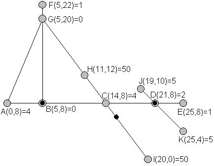

| Source file: | guard.{c, cpp, java} |
| Input file: | guard.in |

The Bluewater Security Company provides guards for clients with valuable possessions. Bluewater has found that clients are interested in having guards posted where they can see everything that is valuable merely by turning their heads, and also like guards to be posted particularly close to particularly valuable items. A sample site layout is shown above. Ignore the three black dots for now. Various locations are labeled and assigned values. For instance location A at coordinates (0,8) is the position of an item with value 4. Locations showing a value 0, like G, do not have a valuable item. The straight lines indicate corridors. For simplicity, corridors are modeled as line segments with 0 width. A guard at an intersection point of several corridors can see and therefore guard the items on each of the corridors. If Bluewater were contracted to supply 3 guards, they might choose to post them at the positions indicated with the small black dots. The guard not at an already labeled position is at (15.5, 6). To model the desire for guards to be closer to items of higher value, Bluewater calculates the risk to a valuable item to be the value of the item times the minimum distance to a guard that can see the item. Even if a guard is close to an item that is around a corner, that guard does not affect the risk to the item, since the guard cannot see around a corner. In the diagram shown, the risks to the items are A: 4x5=20, C: 4x2.5=10, D: 2x0=0, .... The largest risks are for H: 50x7.5=375 and I: 50x7.5=375, so the maximum risk to any one item is 375. With this site layout, no arrangement of 3 guards would provide a lower maximum risk, so this arrangement of 3 guards minimizes the maximum risk. Bluewater would like to be able to tell any client who requests a particular number of guards for a particular site layout, what the minimized maximum risk will be.
Input: The input will consist of one to sixteen data sets, followed by a line containing only 0. On each line the data will consist of blank separated tokens.
The first line of a dataset contains integers p c g, where p is the number of points specified, c is the number of corridors, and g is the number of guards to be placed. Constraints are 1< p < 12; 0 < c < 12; 0 < g < 5.
Next in the dataset are a total of p groups of four tokens, each consisting of a capital letter and three nonnegative integers L x y v indicating the point (x, y) with label L contains an item with value v. If p is no greater than 6, these groups will all be on one line. If p is greater than 6, then the seventh and further groups will be on the next line. Labels will be consecutive letters starting from A. All the numbers are less than 1000. Each of the points is unique. A value of 0 for v means there is no item of value there. The number of locations with items of value will be at least as large as the number of guards.
The last line of a dataset contains c strings of letters, one for each corridor. For each corridor the letters are labels for points along the corridor, in order along the line segment from one end to the other, including both endpoints, all intersection points with other corridors, and all locations on the corridor with a valuable item. Each of the points given in the dataset will lie on at least one of the corridors.
Output: There is one line of output for each data set. If there are not enough guards supplied to be able to see all the valuables, the line is "too few guards". Otherwise the line is an unsigned number r rounded to two places beyond the decimal point, where r is the minimum value over all placements of g guards of the maximum "risk" to the valuables.
The first example dataset matches the illustration above, and the next three examples only vary the number of guards.
| Example input: | Example output: |
| 11 5 3 A 0 8 4 B 5 8 0 C 14 8 4 D 21 8 2 E 25 8 1 F 5 22 1 G 5 20 0 H 11 12 50 I 20 0 50 J 19 10 5 K 25 4 5 ABCDE AG FGB GHCI JDK 11 5 2 A 0 8 4 B 5 8 0 C 14 8 4 D 21 8 2 E 25 8 1 F 5 22 1 G 5 20 0 H 11 12 50 I 20 0 50 J 19 10 5 K 25 4 5 ABCDE AG FGB GHCI JDK 11 5 1 A 0 8 4 B 5 8 0 C 14 8 4 D 21 8 2 E 25 8 1 F 5 22 1 G 5 20 0 H 11 12 50 I 20 0 50 J 19 10 5 K 25 4 5 ABCDE AG FGB GHCI JDK 11 5 4 A 0 8 4 B 5 8 0 C 14 8 4 D 21 8 2 E 25 8 1 F 5 22 1 G 5 20 0 H 11 12 50 I 20 0 50 J 19 10 5 K 25 4 5 ABCDE AG FGB GHCI JDK 3 3 1 A 0 0 50 B 0 3 60 C 4 0 20 AB CB CA 0 |
375.00 1250.00 too few guards 21.21 150.00 |
Last modified on October 28, 2007 at 8:15 AM.